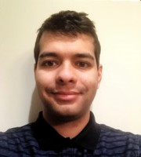

About Me
I just graduated from Gonzaga University (May 2019) with a BS in Computer Science. I am looking for a full-time job as an Entry Level Software Developer or as an Intern where I can grow as a programmer within your company.
My attached resume provides evidence of relevant coursework and languages needed to excel at this position. My coursework has given me a rich mixture of both the theoretical and practical sides of my field. The classes "Design and Analysis of Algorithms", "Object Oriented Programming", and "Data Structures" provided fundamentals of programming at a high level. I also took upper division classes in "Cryptography", "Computer Graphics", and "Computational Modeling". These classes provided practical aspects of coding such as building animations in C++, designing real world scientific models in Java, and encrypting messages over the internet in Python. In September 2017, I graduated from a 24 week coding boot camp at University of California, Irvine, which certified me as a Full Stack Web Developer.
I have experience working with the Gonzaga University English Learning Center. There I implemented a dynamically growing classroom where teachers could post assignments on a web app. Students could access those assignments and submit their responses. Some of the technologies I used to create this app were JavaScript, JQuery, CSS, HTML, Ajax, SQL, Microsoft Azure, and Node.JS.
Please feel free to contact me for further information at the phone number and e-mail address listed in the "Contact" Tab. Thank you for your time and interest. I look forward to hearing from you soon.